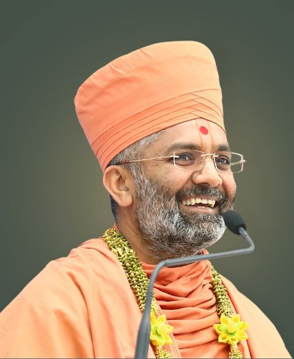

|  | personal detailsFull name:Vishvavallabhdasji swamiNickname:Sat shree born place:Shambhupara,Amreli,Gujarat age:52 study:Sanskritacharya goal:The ultimate welfare of the soul |
In 1800, he was initiated into the Uddhav sampradaya by his guru, Swami Ramanand, and was given the name Sahajanand Swami. Despite opposition, in 1802, Ramanand handed over the leadership of the Uddhav Sampraday to him before his death.[8] According to the Swaminarayan tradition, Sahajanand Swami became known as Swaminarayan, and the Uddhav Sampraday became known as the Swaminarayan Sampradaya, after a gathering in which he taught the Swaminarayan Mantra to his followers. He emphasized "moral, personal, and social betterment,"[9] and ahimsa,[10]. He is also remembered within the sect for undertaking reforms for women[11] and the poor,[12] and performing large scale non-violent yajñas (fire sacrifices).[13]
During his lifetime, Swaminarayan institutionalized his charisma and beliefs in various ways.[14] He built six mandirs to facilitate devotional worship of God by his followers,[15][16][17] and encouraged the creation of a scriptural tradition,[14][18][19] including the Shikshapatri, which he wrote in 1826.[20] In 1826, through a legal document titled the Lekh, Swaminarayan created two dioceses, the Laxmi Narayan Dev Gadi (Vadtal Gadi) and Nar Narayan Dev Gadi (Ahmedabad Gadi), with a hereditary leadership of acharyas and their wives from his own extended family,[web 1] who were authorized to install statues of deities in temples and to initiate ascetics.[14]
Swaminarayan was born on 3 April 1781 (Chaitra Sud 9, Samvat 1837) in Chhapaiya, a village near Ayodhya in present-day Indian state of Uttar Pradesh.[1] Born into the brahmin or priestly caste of Sarvariya, Swaminarayan was named Ghanshyam Pande by his parents, Hariprasad Pande (father, also known as Dharmadev) and Premvati Pande (mother, also known as Bhaktimata and Murtidevi).[1] The birth of Swaminarayan coincided with the Hindu festival of Rama Navami, celebrating the birth of Rama. The ninth lunar day in the fortnight of the waxing moon in the month of Chaitra (March–April), is celebrated as both Rama Navami and Swaminarayan Jayanti by Swaminarayan followers. This celebration also marks the beginning of a ritual calendar for the followers.[21] A Swaminarayan sectarian legend tells how Narayana from the Nara Narayana pair, was cursed by sage Durvasa to incarnate on the earth as Swaminarayan.[22]